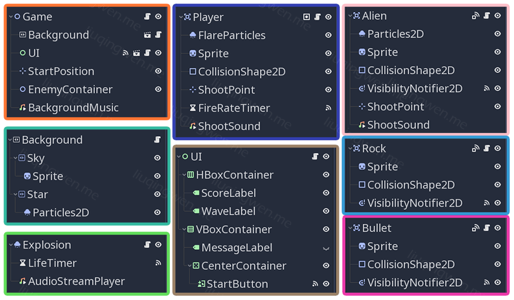
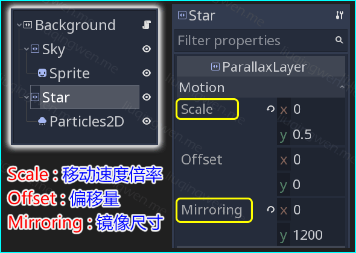

Godot3游戏引擎入门之十一：Godot中的粒子系统与射击游戏（下）
一、前言 继续讲解我们的第二个小游戏：太空射击游戏，本篇为上一篇文章 的继续。在上一节中我给大家介绍了 Particles2D 粒子节点的相关参数以及简单的应用，这一节则介绍这个小游戏中的主要场景和关键的代码实现。
PS ：在写文章的这两天， Godot 官方又紧凑地发布了第四个 Alpha 版本，大家可以到这里下载： Godot 3.1 Alpha4 ，本以为圣诞节前会发布第一个 Beta 版本，目前来看还会有第五个 Alpha 版本， Beta 版本肯定要等到 2019 年啦！嗯，热情期待中……
主要内容：太空射击游戏场景与代码（下篇）http://liuqingwen.me/2018/12/25/introduction-of-godot-3-part-11-introduce-the-particles-system-and-make-a-shooter-game-part-2/ http://liuqingwen.me/introduction-of-godot-series/
二、正文 本篇目标
介绍 Godot 中自带的粒子系统（上篇）
了解其他几个常见节点的使用（上篇）
本射击游戏场景介绍和代码
游戏所有场景 太空射击游戏的场景主要分为：玩家、敌人（外星人和岩石）、子弹、 UI 界面 、入口主场景等，每个场景的构造都很简单，所应用到的几个新节点我也在上一篇文章 中作了简短的介绍，其他节点相信看过我本系列文章的朋友都应该很熟悉啦，哈哈。 :wink:

提醒大家的是，子弹场景有两个： Bullet.tscn 和 EnemyBullet.tscn ，从名字可以看出来，一个是用于玩家发射的子弹，一个是敌人发射的子弹，他们除了子弹的图片也就是外观不同 之外，其他部分，包括代码都是完全一样的，因为 EnemyBullet.tscn 就是直接从 Bullet.tscn 继承 实例化而来。（如何实例化一个场景？还记得 🔗 这个图标吗？找一找吧。）
浏览一下所有场景“构造图”，接下来简单地一一介绍下所有场景及其核心代码部分。
1. 子弹场景 首先是子弹场景，它比较特殊，有两个 。子弹场景主要用于玩家和敌人发射的子弹，每颗子弹在发射后会一直往一个方向飞行，飞行过程中检查是否与其他对象相撞，然后在代码中做出相应的处理：
Bullet.gd 1 2 3 4 5 6 7 8 9 10 11 12 13 14 15 16 17 18 19 20 21 22 23 24 25 26 27 28 29 30 31 32 33 34 35 36 37 extends Area2D signal destroy_object(type) export(String, 'player' , 'enemy' ) var type = 'player' var _velocity = Vector2() func _process(delta): self.position += _velocity * delta func _on_Bullet_area_entered(area): if area.is_in_group('player' ) && type == 'enemy' : area.destroy() self.queue_free() elif area.is_in_group('enemy' ) || area.is_in_group('rock' ): if type == 'player' : area.destroy() var objectType = 'enemy' if area.is_in_group('enemy' ) else 'rock' self.emit_signal('destroy_object' , objectType) if ! (area.is_in_group('enemy' ) && type == 'enemy' ): self.queue_free() elif area.is_in_group('bullet' ) && area.type != type: area.queue_free() self.queue_free() func _on_VisibilityNotifier2D_screen_exited(): self.queue_free() func start(velocity): velocity = velocity
那么如何在玩家和敌人场景中分别使用这两个子弹场景呢？只需要在 Player 脚本以及 Alien 脚本代码中，添加一句代码即可： export(PackedScene) var bulletScene ，也就是把各自要用到的子弹场景暴露为显示在编辑器中的变量，这样我们就可以直接拖拽相对应的子弹场景到各自的 bulletScene 属性中。
一个场景（节点）应用到多个场合 在游戏中是很常见的，对于子弹场景除了我所采用的这种处理方式，还有另外一种常见的方法：只需要设置一个 Bullet.tscn 子弹场景，然后在代码中创建子弹的时候，动态设置子弹的材质就可以了。这样一个子弹场景就能轻松地被玩家和敌人分别使用，伪代码如下：
1 2 3 4 5 6 7 var playerBulletImageTexture = load('res://Assets/Images/player_bullet.png' ); var enemyBulletImageTexture = load('res://Assets/Images/enemy_bullet.png' ); func setType(type): match type: 'player' : $Sprite.texture = playerBulletImageTexture; 'enemy' : $Sprite.texture = enemyBulletImageTexture;
关于资源加载函数 load() 我想在后面会继续讨论。一般游戏中会优先使用第二种方式，但是第一种方式更加适合新手，而且扩展性也更好，比如我想在敌人的子弹场景中再加一些其他的效果，让它变得更酷，这都是非常方便且直接的，另外结合 export(PackedScene) 更可以轻松的拖拽其他场景到对应的场景属性下，非常方便，大家多多感受下。
2. 背景场景 关于背景图片我已经在上一篇文章 中说明过了，不过并没有详细阐述其原理，也没有提供任何代码，其实背景场景的代码是最少的：
1 2 3 4 5 6 7 extends ParallaxBackground export(float) var scrollSpeed = 50 func _process(delta): self.scroll_offset.y -= scrollSpeed * delta
然后参考一下其相关节点的设置你就能明白其中的道理：

前面两个节点很好理解，实际开发中，对于 ParallaxBackground 背景节点，我们一般会应用于有摄像机*节点的游戏中，这样背景会自动跟随摄像机滚动，在 2D 游戏中我们可以设置多层背景，比如靠近玩家的树木、远离玩家的山岭、最远方的太阳或者月亮等，很显然，越远的物体滚动速度越慢，也就是 *Scale 属性值越小，越近则滚动越快，大家可以结合之前的图片体会一下。那么，像本游戏中没有摄像机该如何处理呢？依然很简单，如上代码，手动设置背景的滚动属性 就可以啦。
3. 敌人场景 游戏中敌人主要有两种，一种是外星人，另一种是坠落的岩石，脚本代码也都很好理解，这里我给敌人添加了一些有趣的随机元素，它们可以水平移动并且随机发射子弹，核心代码如下：
Alien.gd 1 2 3 4 5 6 7 8 9 10 11 12 13 14 15 16 17 18 19 func _moveAndShoot(): var nextMovement = rand_range(0.5 , 1.5 ) yield (self.get_tree().create_timer(nextMovement), "timeout" ) var shouldMove = randi() % 3 >= 1 if shouldMove: _hMovement = randi() % 3 - 1 nextMovement = rand_range(1.0 , 1.5 ) yield (self.get_tree().create_timer(nextMovement, false), "timeout" ) _hMovement = 0 if _isInShootableArea(): _shoot() _moveAndShoot()
这是一个无限循环：外星人进入游戏场景后，随机飞行一段时间，随后有一定的概率发生水平移动，接下来判断外星人是否在屏幕范围内，在范围内则发射一颗子弹 。方法中我使用了很多随机时间节点，也是为了丰富游戏场景，让游戏稍微有点挑战性吧。
对于岩石场景的代码我就不贴出来了，岩石只有滚动和一定大小的随机缩放，代码很简单，不再啰嗦。
4. 爆炸场景 爆炸场景使用了 Particles2D 粒子节点，一个爆炸场景我使用在了这三个地方：岩石爆炸、敌人爆炸以及玩家爆炸。他们的处理方式稍微不同，这里可以从代码中看出来：
Explosion.gd 1 2 3 4 5 6 7 8 9 10 11 12 13 14 15 16 17 18 19 var type = 'rock' setget _setType func _ready(): match type: 'rock' : self.amount = 40 _audioPlayer.stream = rockAudio 'player' : _lifeTimer.wait_time = 2.0 _audioPlayer.stream = playerAudio 'alien' : self.amount = 50 _audioPlayer.stream = alienAudio _audioPlayer.pitch_scale = 2.0 _audioPlayer.play()
嗯，区别在于三种爆炸的音效不同，粒子数量稍微有点差别而已。关于粒子我在上篇文章 中已经详细讲述，如果有不清楚的，大家可以下载源码参考一下。 :laughing:
5. 玩家场景 玩家场景就非常熟悉啦，主要是控制玩家的移动，还有子弹的发射：
Player.gd 1 2 3 4 5 6 7 8 9 10 11 12 13 14 15 16 17 18 func _shoot(): if bulletScene == null: return var bullet = bulletScene.instance() bullet.position = _shootPoint.global_position bullet.start(Vector2(0 , - bulletSpeed)) bullet.connect('destroy_object' , self, '_on_Bullet_destroy_object' ) self.get_tree().get_root().add_child(bullet) _shootSound.play()
这里核心代码在于 self.get_tree().get_root().add_child(bullet) 这一句，可以看出来，我把发射子弹后生成的子弹节点添加到了游戏的根节点 root 下，这样保证发射出去的子弹和玩家没有任何关系，不会发生内存泄漏。
6. 游戏主场景 主场景是所有子场景和代码的组合，主要负责游戏的整体控制，关键代码在于生成并添加当前关卡的所有敌人，包括岩石和外星人，另外在 _process(delta) 方法中还会不断地判断敌人是否已经被消灭完或者游戏是否已经结束。
Game.gd 1 2 3 4 5 6 7 8 9 10 11 12 13 14 15 16 17 18 19 20 21 22 23 24 25 26 27 28 29 30 31 32 33 34 35 36 37 38 39 40 41 42 43 44 45 46 47 48 49 50 51 52 53 54 55 56 57 58 59 60 61 62 63 64 65 66 67 68 69 70 71 72 73 74 75 76 77 78 79 80 81 82 var _isGameOver = false var _score = 0 var _currentWave = 0 var _totalAliens = 0 var _totalRocks = 0 var _enemyCount = -1 func _process(delta): if !_isGameOver && _enemyCount == 0 && _enemyContainer.get_child_count() == 0 : _enemyCount = -1 _nextLevel() elif _isGameOver && _enemyContainer.get_child_count() == 0 : _ui.showStartButton() func _restart(): _isGameOver = false _score = 0 _ui.updateScore(_score) _currentWave = 0 _audioPlayer.play() if playerScene != null: var player = playerScene.instance() player.connect('game_over' , self, '_on_Player_game_over' ) player.connect('score_updated' , self, '_on_Player_score_updated' ) player.position = _startPosition self.add_child(player) _nextLevel() func _nextLevel(): _currentWave += 1 _ui.updateWave(_currentWave) yield (self.get_tree().create_timer(3.0 ), 'timeout' ) _ui.hideMessage() _calculateEnemies() _enemyCount = _totalAliens + _totalRocks _generateRocks() _generateAliens() func _generateRocks(): if rockScene == null: return for i in range(_totalRocks): if _isGameOver: return var rock = rockScene.instance() var yPosition = rand_range(-40 , -100 ) rock.position = Vector2(80 * (randi() % 6 ) + 40 , yPosition) _enemyContainer.add_child(rock) _enemyCount -= 1 var nextTime = rand_range(0.5 , 1.5 ) yield (self.get_tree().create_timer(nextTime, false), 'timeout' ) func _generateAliens(): if alienScene == null: return for i in range(_totalAliens): if _isGameOver: return var alien = alienScene.instance() var yPosition = rand_range(-40 , -100 ) alien.position = Vector2(60 * (randi() % 5 ) + 80 , yPosition) _enemyContainer.add_child(alien) _enemyCount -= 1 var nextTime = rand_range(1.0 , 2.5 ) yield (self.get_tree().create_timer(nextTime, false), 'timeout' ) func _calculateEnemies(): _totalAliens = _currentWave * 2 + 3 _totalRocks = _currentWave * 3 + 5
同样省略了一些代码，这里核心函数是 _nextLevel() 方法，方法里又调用了另外两个重要方法： _generateRocks() 和 _generateAliens() ，通过大量使用 yield 关键字创建时间计时器，这样让游戏更加随机性，让太空显得更加真实。
游戏完善 好啦，看一下我们的成果吧，最终效果一览：
大家可以自己尝试做这么个小游戏，也可以直接下载源码然后运行，对于热爱游戏的朋友，我觉得不应该只停留在“ play ”上，这个游戏可以做得更加有趣，你觉得呢？所以，我建议新手朋友们可以继续尝试尝试以下几点完善：
可以丰富子弹系统，提供一些更加有趣的子弹样式、发射方式
可以丰富怪物系统，比如每个关卡设置一个最终 BOSS 等
可以实现多人游戏，这个对新手有点难度，我想以后会谈的
只是自己的一点点想法，哈哈。
三、总结 这个小游戏的制作就此结束啦，总结一下本篇上下文的主要知识点：
Godot 中自带粒子系统的相关参数说明
游戏中应用到的其他几个有用的节点
太空射击游戏的所有场景构造及其关键点
游戏代码逻辑的核心部分解析
本篇的 Demo 以及相关代码已经上传到 Github ，地址： https://github.com/spkingr/Godot-Demos ，最后，原创不易 ，希望大家喜欢吧！ :smile:
我的博客地址： http://liuqingwen.me ，我的博客即将同步至腾讯云+社区，邀请大家一同入驻： https://cloud.tencent.com/developer/support-plan?invite_code=3sg12o13bvwgc ，欢迎关注我的微信公众号：
Comments: